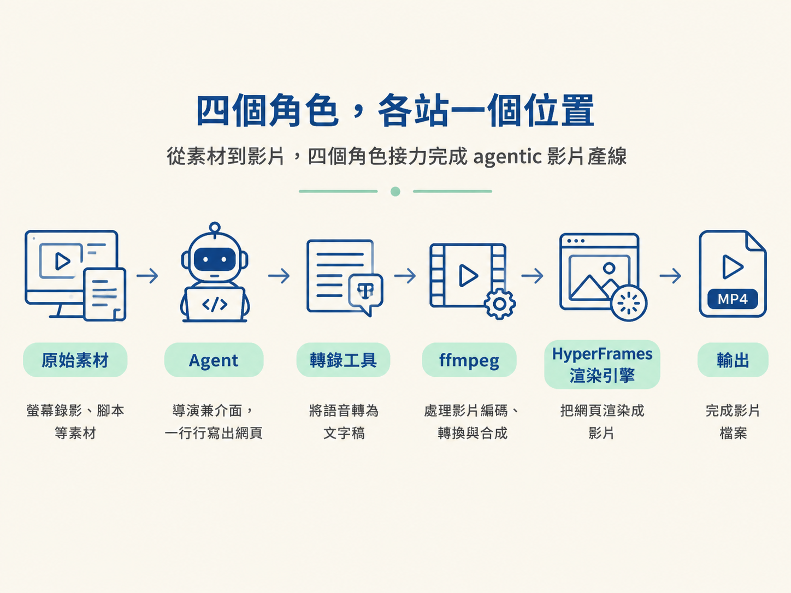
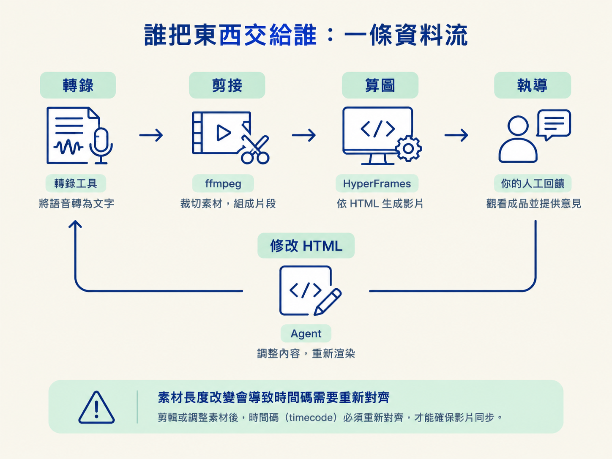

學完這一節，你應該能說明 agent、HyperFrames、轉錄工具與 ffmpeg 在 agentic 影片產線上各自負責什麼，也能把 HyperFrames 的「HTML 進、MP4 出」放回正確的位置。
想像一下這個常見場景：你已經會用 coding agent 寫程式，也看過別人用 Claude 做出漂亮的動態圖像影片。於是你打開終端機，準備照著做，卻在第一分鐘就卡住了：到底要安裝剪輯軟體，還是訂閱生成式影片服務？需要幾把 API key？為什麼教學裡一直出現 ffmpeg？
這通常不是操作能力的問題，而是你還不知道產線上有哪些角色。就像走進一間廚房，知道今天要煮一道菜，卻分不清爐子、砧板、冰箱和洗碗槽各自做什麼；角色一旦混在一起，後面的指令就只剩照抄，出了問題也不知道該找誰負責。
所以這一節先把產線上的四個角色點名，說清楚誰把什麼交給誰。等這張地圖畫好，後面每個工具才有地方可以掛上去。
這條產線通常從一段原始素材開始：可能是螢幕錄影、講解影片、demo 側錄，也可能只有一份腳本。最後要得到的，是一支畫面、聲音和動態圖像彼此對得上的 MP4。中間會由四個角色接力完成：
| 角色 | 它在產線上的位置 | 換成廚房的比喻 |
|---|---|---|
| Agent（Claude Code、Codex 等） | 你的介面，也是導演：讀素材、寫程式、下指令，並根據回饋反覆修改 | 總鋪師，決定這道菜怎麼做 |
| HyperFrames | 渲染引擎：把 agent 寫出的 HTML 網頁變成影片 | 爐子與烤箱，負責把備料變成成品 |
| 轉錄工具（AssemblyAI、Whisper 等） | 把聲音轉成帶時間碼的文字，讓 agent 能讀懂素材 | 讀稿機兼場記，把對話記成逐字稿 |
| ffmpeg | 負責剪接與轉檔：切掉靜音、拼接片段，並輸出檔案 | 菜刀與剪刀，處理素材的長短 |
這四個角色做的是不同的事。很多人一開始會把「用 AI 做影片」想成「找一個生成式影片模型，輸入一句話就產生畫面」。但這條產線不是這種模式：畫面不是模型憑空生成的，而是 agent 一行一行寫出網頁，再由 HyperFrames 把網頁渲染成影片。

這是整條產線最關鍵、也最容易搞混的地方。HyperFrames 是一套開放原始碼工具，工作是把 HTML 元素，也就是你在網站上看得到的那些元素，轉成影片。
用更白話的比喻，它就像把 agent 做好的網站錄成影片，只是這個錄製過程可以精準控制、重複播放，而且每一格畫面都能對應到正確時間。
因為畫面的來源是網頁，所以 agent 熟悉的 HTML、CSS、JavaScript、Canvas 和 WebGL，都可以直接拿來製作動畫。你可以在影片畫面上疊加 HTML 元素、執行動畫，或進行調色。花字、卡片、跳動的數字，看起來像影片特效，背後其實都是程式碼在執行，而不是某個生成式影片模型猜出來的畫面。
一句話記住：你寫的是網頁，HyperFrames 負責把它播成 MP4。因此，影片品質幾乎取決於 agent 寫出的網頁品質，而不是你選了哪一顆生成式影片模型。
把四個角色排進時間軸，就能看出它們如何接力。首先，你把原始素材交給 agent。agent 呼叫轉錄工具，取得一份帶時間碼的逐字稿；有了這份逐字稿，agent 才能判斷哪裡是靜音、哪一句是 NG 或重錄，再使用 ffmpeg 剪出一版乾淨的素材。
接著，agent 根據剪好的版本規劃分鏡，為每個場景寫出 HTML，交給 HyperFrames 渲染成影片。你看過成品後提供回饋，agent 再回頭修改 HTML，重新渲染下一版。

這個順序不是任意安排的。轉錄要先做，因為它是 agent 理解口語內容的窗口；剪接要在算圖之前完成，因為動態圖像必須和逐字稿同步。一旦素材長度改變，所有時間碼都可能需要重新對齊。
因此，後面的產線節點會沿著這條關係展開：先轉錄，再剪接，接著設計與算圖，最後由你觀看成品並進行執導。
你不一定每次都要親自走完整條產線。官方把使用方式分成三個層級，而且每一層都保留前一層的能力：
| 層級 | 做法 | 最適合 |
|---|---|---|
| Level 1 · website-to-video | 提供一個網址或一段內容，用一句話產生短片 | 測試新模型、製作作品集，以及建立可重複使用的元素 |
| Level 2 · 分鏡 | 先讓 agent 產出 HTML 分鏡，你留言確認後，再開始製作 | 已經知道自己想要什麼樣的影片 |
| Level 3 · 執導 | 針對已渲染的成品逐秒提供回饋，修整最後 10–20% | 打磨畫面、聲音與剪接的細節 |
這三個層級會是後面 Tier 1 第三個節點的主題。現在先記住：無論選哪個層級，四個角色的分工都不變，改變的只是你要投入多少控制力。
Level 1 幾乎把判斷交給 agent；到了 Level 3，則是你對每一個鏡頭逐一給出判斷。就像同一間廚房，可以請總鋪師全權處理，也可以由你親自試味道、調火候，甚至指定每一道菜要怎麼擺盤。
這條產線有四個角色：agent 是介面兼導演，HyperFrames 把 HTML 網頁渲染成 MP4，轉錄工具把聲音轉成帶時間碼的文字，ffmpeg 負責剪接與轉檔。四者缺一不可，資料通常會依序經過轉錄、剪接、算圖，再回到人工執導。最關鍵的一句話是：HyperFrames 不是生成式影片模型，它渲染的是 agent 用網頁技術寫出的畫面。
現在，你已經有了一張產線地圖：agent 負責協調與修改，轉錄工具讓它讀懂聲音，ffmpeg 整理素材，HyperFrames 則把 HTML 場景變成看得見的影片。下一個問題就是，誰來擔任這個「導演」？你要使用 Claude Code 還是 Codex？模型該開到哪一級？effort 要設多大？這些選擇會直接影響花費與等待時間，下一節就來把它們配好。